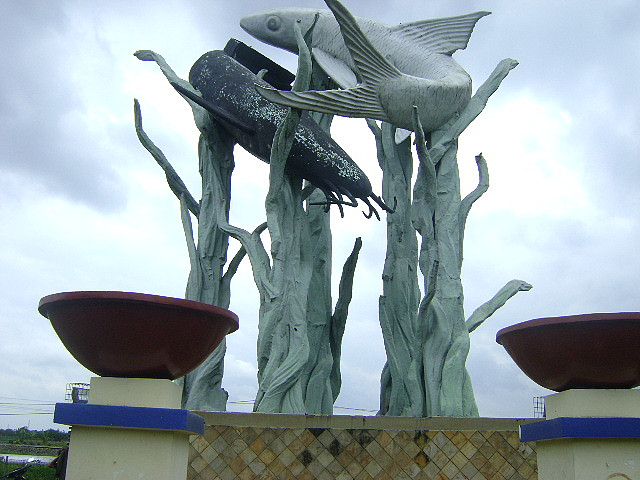
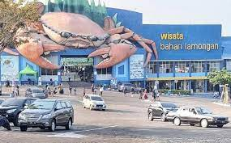
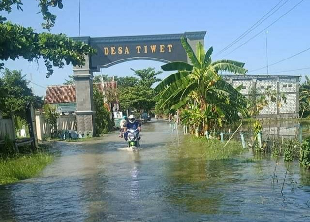

KABUPATEN LAMONGAN

Kabupaten Lamongan adalah sebuah kabupaten di Provinsi Jawa Timur, Indonesia.
Ibu kotanya adalah Lamongan. Kabupaten ini berbatasan dengan Laut Jawa di utara, Kabupaten Gresik di timur,
Kabupaten Mojokerto dan Kabupaten Jombang di selatan, serta Kabupaten Bojonegoro dan Kabupaten Tuban di barat.
Pusat pemerintahan Kabupaten Lamongan terletak 50 km sebelah barat Kota Surabaya, ibu kota Provinsi Jawa Timur.
Kabupaten Lamongan merupakan salah satu wilayah yang masuk dalam kawasan metropolitan Surabaya, yaitu Gerbangkertosusila.
GEOGRAFIS

Secara geografis Kabupaten Lamongan terletak pada 6o51' - 7o23' Lintang Selatan dan 112o33' - 112o34 Bujur Timur.
Kabupaten Lamongan memiliki luas wilayah kurang lebih 1.812,8 km2 atau ±3.78% dari luas wilayah Provinsi Jawa Timur.
Dengan panjang garis pantai sepanjang 47 km, maka wilayah perairan laut Kabupaten Lamongan adalah seluas 902,4 km2,
apabila dihitung 12 mil dari permukaan laut.
OBJEK WISATA

Lamongan merupakan salah satu kota yang memiliki garis pantai yang ada pada Provinsi Jawa Timur.
Memiliki daerah pesisir membuat tempat ini memiliki hawa yang panas namun tentunya memiliki beberapa destinasi wisata
yang sangat di rekomendasikan untuk Anda. Meskipun kota ini memang lebih terkenal dengan kulinernya akan tetapi beberapa
tempat wisatanya tidak kalah menarik. Salah satunya adalah wisata bahari lamongan. Tempat wisata ini menjadi salah satu
simbol pariwisata yang terdapat pada kota ini. Seperti halnya namanya tempat ini berdiri di sekitar pantai
sehingga nantinya ketika Anda ingin mencari tempat ini. Anda dapat dengan mudah mengunjungi tempat ini
mengingat aksesnya cukup mudah di jangkau.
Jangan kaget nantinya jika Anda mengunjungi tempat ini ketika bertepatan dengan perayaan hari besar umat Islam.
Karena biasanya tempat ini akan jadi lautan manusia yang memadati tempat ini.
Sebaiknya tempat ini menjadi tujuan utama saat Anda mengunjungi kota ini terutama jika Anda beragama Islam.
BANJIR DI LAMONGAN

Banjir masih menjadi salah satu momok menakutkan bagi sebagian warga Lamongan. Bagaimana tidak,
hamper setiap musim penghujan banjir selalu dating di berbagai wilayah di lamongan. Hal ini dikarenakan lamongan
dilintasi oleh beberapa sungai besar, yaitu sungai bengawan solo, sungai bengawan jero, dan sungai kali lamong.
Pemerintah setempat sampai saat ini masih berusaha memecahkan masalah dan mendapatkan solusi dalam menangani
bencana banjir tersebut, mulai dari pengerukan sungai, pembuatan saluran irigasi yang memdahai, membuat tanggul
dan resapan, dan masih banyak lagi. Warga berharap permasalahan banjir ini dapat cepat teratasi agar roda
ekonomi dan kesejahteraan warga dapat terjamin.